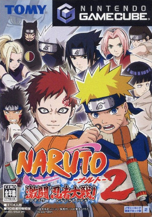

The Internet is Serious Business!
Home > Video Games > GameCube > Naruto: Clash of Ninja/Naruto: Gekitō Ninja Taisen! Series > Naruto: Gekitō Ninja Taisen! 2
Note that I am talking specifically about the Japanese version of the game here, not the North American release entitled Naruto: Clash of Ninja 2. It is the one with this cover art:

After playing Naruto: Clash of Ninja, I was very eager to play any sequels, so when I learned that Naruto: Gekitō Ninja Taisen! 2 (GNT2), the sequel to the first game in the series, was already out in Japan but not in the United States, I couldn't wait and ordered GNT2 online from Play-Asia.com towards the end July 2006. I remember that it took something like 2 to 3 weeks (a painfully long wait for me back then, as I was very anxious to play it) for it ship from Hong Kong all the way to my house in the United States. Being the first video game I ever imported, I was ignorant of regional lockout; when, after a long wait, it finally arrived at my house and I inserted the disc into my GameCube, I was disappointed to find that I couldn't play it because my GameCube's region-lock was different from the game's, so I had to order a GameCube FreeLoader (also from Play-Asia.com) and wait yet another week or so for it to ship to my house.
When the FreeLoader finally arrived in the second half of August, and I used it to defeat the regional lockout and play the game, I was absolutely thrilled. Compared to its predecessor, GNT2 is a massive leap in quality: in my opinion, the two biggest areas of improvement are the addition of the very exciting 4-player battle mode (which the first game lacked) and the more than doubling of the number of playable characters, from the 10 of the previous game to 23—I particularly enjoyed the inclusion of Orochimaru, who I would use as my main fighter in all subsequent games of the series. There is also the addition of the shadow fighting, computer-versus-computer, and three-man squad modes (though without being able to switch fighters mid-battle), as well as new stages and the shop where unlockables can be purchased. Whereas Naruto: Clash of Ninja had only managed to keep me occupied for a week or two, with GNT2 I probably played it for almost a month the first time around before shelving it; afterwards, I picked it up again at least once or twice prior to buying Naruto: Gekitō Ninja Taisen! 3 in August 2007.
Even with its numerous improvements over the first game, though, Naruto: Gekitō Ninja Taisen! 2 still felt to me like it was missing some things. Perhaps most obviously, all of the genin teams in the game besides Team 7 are missing one member, despite that character having been introduced already in the anime/manga: Rock Lee and Neji are in the game, but Tenten isn't; Shikamaru and Ino are in, but Chōji isn't; Kiba and Hinata are in, but Shino isn't; and Gaara and Kankurō are in, but Temari isn't.
Still, GNT2 was, without a doubt, a positive step for the series, and set the stage for Naruto: Gekitō Ninja Taisen! 3.


 All written materials on this Web site are my own, and all are released under the Do What the Fuck You Want to Public License Version 2.
All written materials on this Web site are my own, and all are released under the Do What the Fuck You Want to Public License Version 2.
This page last modified on 28 March 2021.